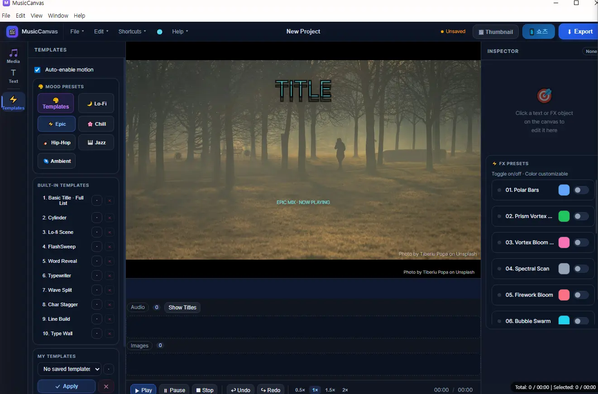
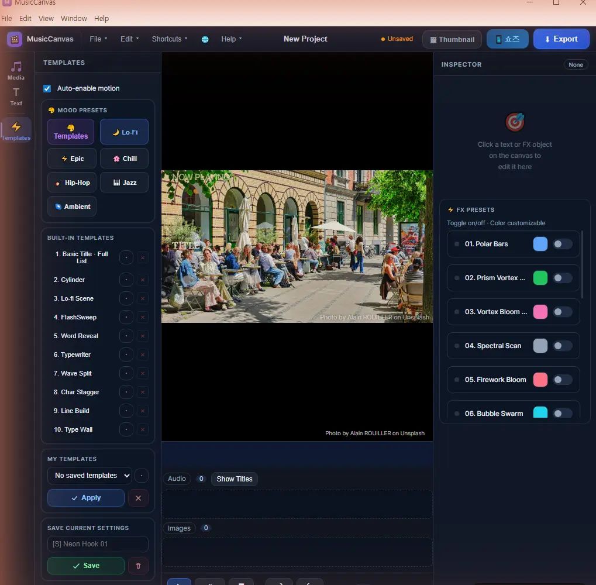
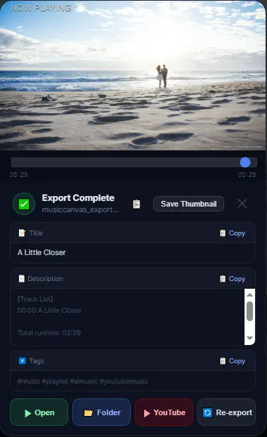

Windows · 7-day free trial
Turn Suno songs
into YouTube videos
Add a song and an image. Get a video with lyrics, effects and titles.
MusicCanvas is a Windows app that turns AI-made music into YouTube music videos and playlist videos. You pay once and use it for good, with no monthly subscription.
- 7 daysfree trial
- $22lifetime license
- 1080pYouTube video
Get it on Gumroad. You can try it during the trial without paying.

Add your song and image
Drop in the mp3 or wav from Suno and a background image. Add several songs to get a playlist video.
Pick lyrics, text and effects
Choose a mood preset or a text template, load the lyrics, and switch on the audio-reactive effects.
Export and upload
Export an MP4 and get the title, description and tags made for you. Copy them into YouTube and you are done.
What is inside
These are the features in the version on sale today.
- FX
Audio-reactive effects
14 FX presets move with the loudness of your music. You can change their colors and switch each one on or off with a click. You can also add video effects such as bokeh and light rays.
- LYRICS
Lyric sync
Search lyrics automatically by song title or paste your own. Lines appear in time with the song, and a karaoke effect fills in the part already sung.
- TEXT
Text templates
10 templates show your title and track list, with motion such as typewriter, character stagger and cylinder. You can save your own settings.
- MOOD
6 mood presets
Lo-Fi, Epic, Chill, Hip-Hop, Jazz and Ambient. One click sets up a whole combination of text and effects.
- BACKGROUND
Image and video backgrounds
Use your own image or a background search result, or find a video on Pixabay and loop it as the background.
- PLAYLIST
Many songs, one video
Add several songs and export them joined into one video. The track list and timestamps for your description are made for you.
- SHORTS
Vertical Shorts
Export a separate 1080×1920 vertical video. It finds the highlight part for you and lets you set an opening hook text.
- UPLOAD
Upload info made for you
When the export finishes you get a title, description and tags with copy buttons. You can save the thumbnail image right away.
- RESUME
Resume an export
If a long export stops, you do not start over. The finished parts are kept and the export continues.
- LANGUAGE
4 interface languages
Switch the app between Korean, English, Japanese and Chinese.
Real screens
These are screenshots taken straight from the app.


Who it is for
A good fit
- You upload songs made with Suno or other AI tools to YouTube
- You join many songs into playlist videos
- You don't want to learn a separate video editor
- You want to pay once instead of every month
Good to know
- It is a Windows app. Mac and mobile are not supported.
- It does not make music. You need to bring your own songs.
- It does not rely on graphics-card acceleration, so long playlists take time to export. It depends on your PC.
- Automatic lyric search and Pixabay search need an internet connection.
Price
- No monthly subscription
- Try it for 7 days before you pay
- Korean, English, Japanese and Chinese interface
- Available on Gumroad and the Microsoft Store
Questions
Is MusicCanvas free?
You can try it for 7 days without paying. After that you need a license to keep using it. It costs $22 once, with no subscription.
Can I turn Suno songs into YouTube videos?
Yes. Add the mp3 or wav you downloaded from Suno. Any audio file works, not only Suno songs.
Does it run on Mac?
No. Only a Windows app is available right now.
Does it make the music too?
No. You make the music with a tool such as Suno. MusicCanvas turns finished songs into videos.
Can I make one video from many songs?
Yes. Add several songs and they are joined into one video. The track list and start times for your description are made for you.
How long does an export take?
It depends on the song length and your PC. A still-image background is the fastest and a video background takes longer. If an export stops, you can continue it.
Does it upload to YouTube for me?
No. You upload yourself. When the export finishes it prepares the title, description and tags for you to copy.
Can I upload AI-made music to YouTube?
Your rights to use a song depend on the plan and terms of the service that made it, so check them before you upload. YouTube may also ask creators to disclose AI-generated content.
Where do I get it?
You can start the 7-day trial and buy on Gumroad. It is also available on the Microsoft Store.
Free tools that go with it
Use them before you make a song and before you upload the video. All are free and need no sign-up.